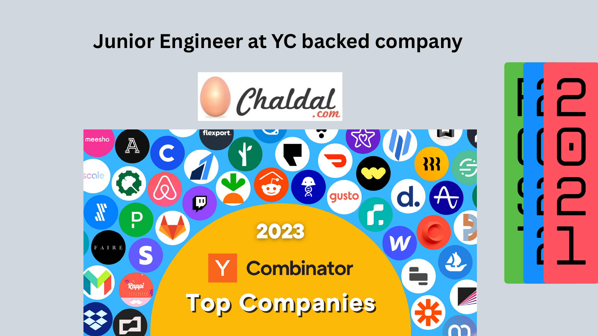
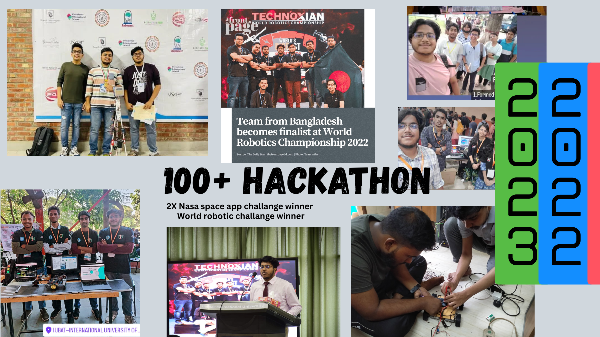
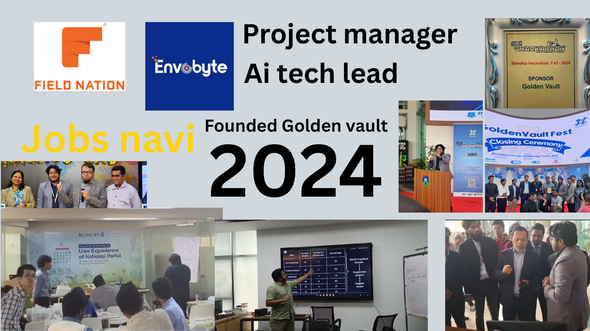
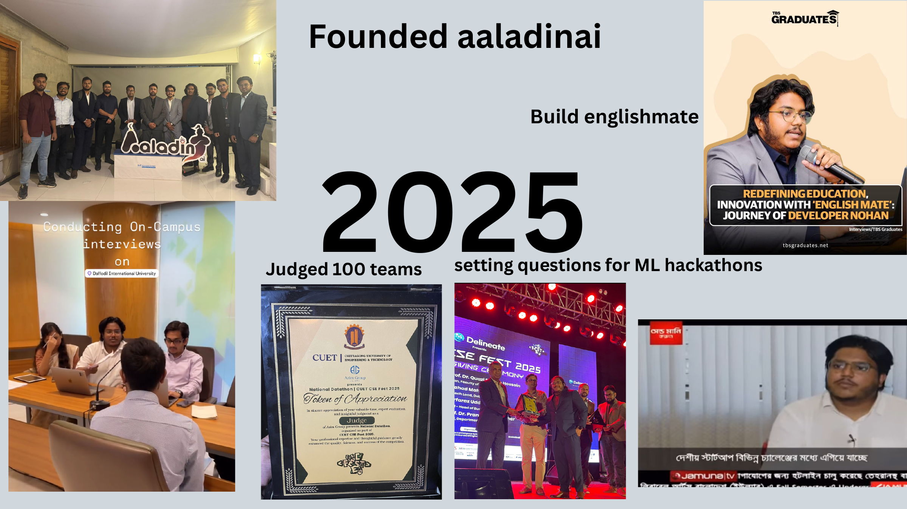
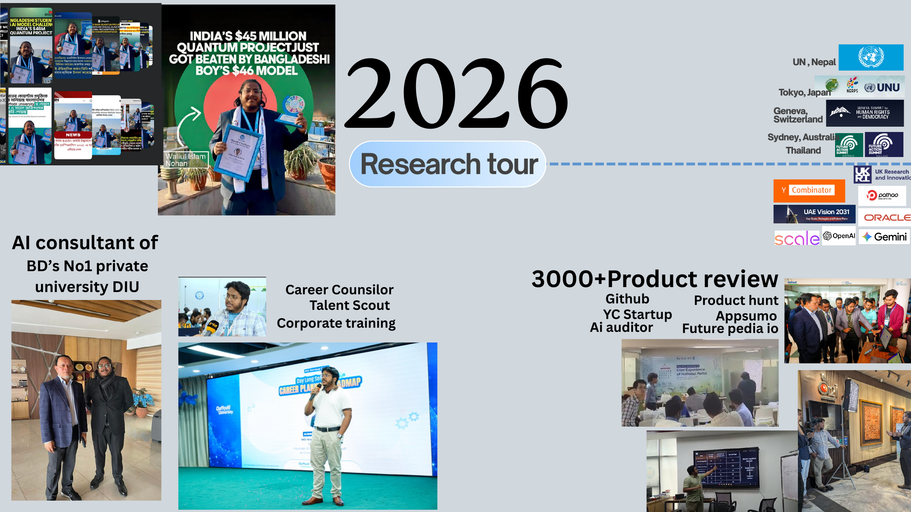

For Investors
Audit AI startups and products before funding or partnership decisions.
- Product viability
- AI feasibility
- Tech and team risk
- Cost and scalability review
AI Systems Architect | Founder | Startup & Product Auditor
I help companies, startups, and investors identify where AI can reduce cost, increase revenue, or expose product and technology risk, then help build the first working system[...]
Best used when a company needs AI clarity fast: what to build, what to avoid, what it will cost, and how to execute with the right team.
Available for AI audits, automation sprints, product due diligence, project rescue, AI roadmap design, and monthly CTO/AI advisor support.





The pattern: self-taught engineering, production systems, hackathon/community leadership, AI product building, startup execution, consulting, and research-facing global ambition[...]
Audit AI startups and products before funding or partnership decisions.
Turn AI ideas into systems with a practical architecture and delivery plan.
Integrate new technology into sales, support, finance, education, HR, and operations.
You promised AI features or a launch date—and now you're burning cash with little to show and time running out.
Your product works, but you need to add AI differentiation. Can you actually execute it with your current team?
You need a technical insider's view of an AI startup before funding. Does their tech work? Are the risks real?
You automated your business with Claude/LangChain. Now you want to productize it and sell it to others.
You need to look under the hood to expose hidden product vulnerabilities, code plagiarism, or data leakage via tech channels.
Your high-fidelity media pipelines, local storage servers, or digital asset automation routines are sluggish, insecure, or breaking.
If your product or story is compelling enough, I may do a consultation call for free. Tell me what you're building, what you're stuck on, and why it matters. If it clicks[...]
✉️ Tell Me Your StoryWhat you get:
Best for:
What you get:
Best for:
What you get:
Best for:
What you get:
Best for:
What you get:
Best for:
Beyond product and code, I work directly with engineers, architects, and technical leaders navigating career pivots, industry transitions, and organizational change. My network spans early-stage startups to Fortune 500 companies building AI.
You're strong in software but new to AI. Companies demand experience you don't have yet. I guide you through what to learn, which projects to build, and how to position yourself for real opportunities.
You're an experienced engineer frustrated by corporate politics, sudden AI restructuring, or misalignment. I connect you with companies building real AI products and help you navigate onboarding and cultural fit.
You're a tech leader at a slow-moving company, losing momentum. Or you've been pulled into management but miss building. I help you find the right environment—whether that's a founder-friendly role, strategic advisory, or a startup where you can own the tech vision.
A custom self-driving CRM tool that helps business owners seamlessly generate leads from multiple social platforms. It enables scheduling meetings and managing customer interactions wit[...]
An all-in-one platform that helps entrepreneurs build their brand from scratch within minutes. By describing an idea, users instantly generate professional logos, business names, pitch [...]
No-code AI agent and autonomous workflow creator connecting internal tools, external APIs, and custom language models through an intuitive drag-and-drop orchestration interface.
Bilingual (Bangla–English) speech-to-text platform enabling clinicians to generate structured, FHIR-compliant e-prescriptions using hands-free voice commands. Supports "Banglish" symp[...]
An interactive AI voice companion and tutor using specialized speech recognition and natural language architectures. Helps users sharpen conversation skills via real-time grammar feedba[...]
An intelligent generative website engine that constructs fully modular, customized, and responsive web systems in minutes based simply on cross-prompt textual business design ideas.
A smart engineering and design assistant crafted under Aaladin AI. Simplifies complex planning, visualization, architectural mapping, flowcharts, and technical real-estate P&ID diagrams[...]
An AI-powered business intelligence platform that enables companies to search, analyze, and understand operations through a single dashboard. Features a machine-agnostic AI Sensor Modul[...]
An AI-powered transit and transportation monitoring platform powered by Aaladin AI. Enhances urban fleet management through real-time vehicle tracking, passenger automated counting, fue[...]
A smart citizen platform establishing unlimited cashless access configurations across domestic transportation modes. Consolidates routing, multi-token payment systems, scheduling tracke[...]
Predictive spatial ecosystem integrating satellite imagery streams (NASA) and real-time community water gauge logs (BWDB) onto localized web dashboards to support fast geographical floo[...]
Empathetic conversational legal framework designed to unpack local statutes into simple insights, allowing crisis victims to safely locate immediate hotlines and geographic legal tracki[...]
Comprehensive ecosystem for seamless multi-channel logistics booking. Combines flight paths, hotel aggregators, bus ticketing, real-time comparison tables, and paperless booking options[...]
AI job-matching parsing agent engineered with a fast Java Spring Boot and Next.js foundation. Aggregates live corporate hiring vacancies via custom automated structured extraction pipel[...]
Skill development challenge and interactive growth engine running on a highly responsive Next.js stack, complete with affiliate reseller systems tracking multi-tier engagement metrics.<[...]
An internationally compliant, secure theological conversational knowledge platform utilizing cross-referenced scholarly guidance verification models.
An intelligence ecosystem maximizing remote virtual education environments by outputting attention detection models, direct distraction alerts, engagement analytics metrics, and descrip[...]
An AI-powered mobile image editor built on React Native and a Python Flask backend. Streamlines image background masking tasks cleanly with batch capabilities for e-commerce stores and [...]
A specialized processing platform leveraged to generate short-form automated marketing media assets, tailored for scalable engagement on modern programmatic video feeds.
An official government application portal streamlining administrative processing pipelines and information workflows safely and accurately.
Corporate platform setup featuring advanced interface optimizations, cloud configurations, and automated system setups.
Smart localized competitive mock diagnostics platforms leveraging automated guidance systems, metrics, flashcards, and tracking vectors for students across Bangladesh.
Automated workflow companion built to optimize task operational assignments, map core execution bottlenecks, and predict delays using predictive analytics tracking.
An automated inventory management, digital storefront optimization, and operational monitoring suite customized directly for fast-growing small business environments.
Deep automated resource planning system combining underlying corporate asset metrics, payroll logs, inventory structures, and visual data layers under unified platforms.
Operational standardizing module crafted to convert flat corporate compliance text tracks into interactive structured trackable visual workflows cleanly.
Production architectural systems delivered for specialized services including Gadgets All BD, Roshan Transport, and Vector Power.
An advanced system designed to extract and structure printed educational testing materials. Accurately digitizes bilingual text architectures (Bangla/English), complex mathematical symb[...]
Enterprise conversational IVR framework optimized for natural Bangla syntax. Combines native speech-to-text, context intent mapping, and audio synthesizers to support rapid B2B communic[...]
Architecting proprietary lightweight model architectures engineered with optimized parameter configurations to deliver rapid response times while remaining computationally lighter than [...]
Deep-learning visual interpretation systems applied directly to custom object classifications, live monitoring matrices, and specialized imagery recognition workflows.
Generative AI, AI agents, RAG, OCR, speech-to-text, small language models, LoRA/QLoRA/PEFT, full-stack SaaS, React, Next.js, Node.js, Python, Django, Flask, Java Spring Boot, Ne[...]